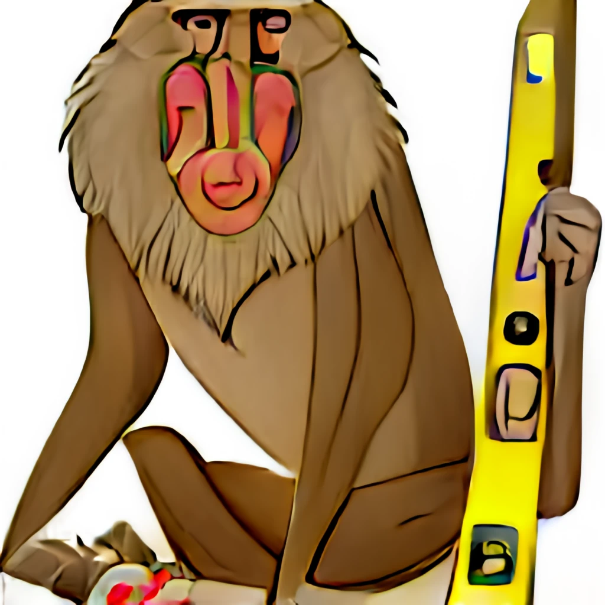

Level Sedate Baboon
This site declares both maskable and non-maskable icons (maskable preferred), with sizes and a 1px red border drawn on the icons.
Maskable icons have a light green background and non-maskable (any-purpose) icons have a light blue background.